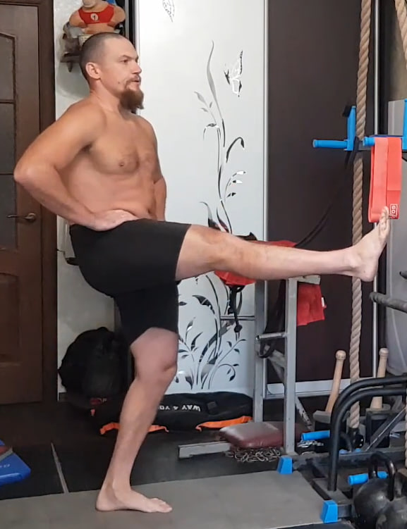
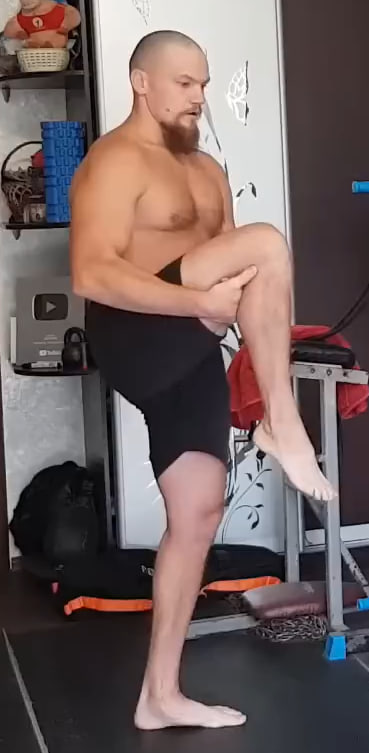
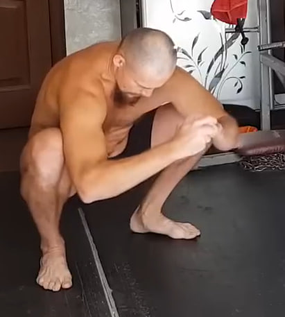
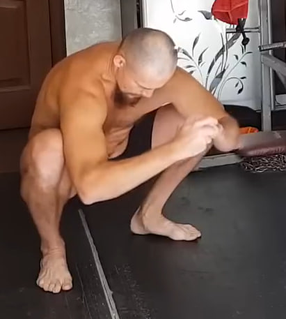
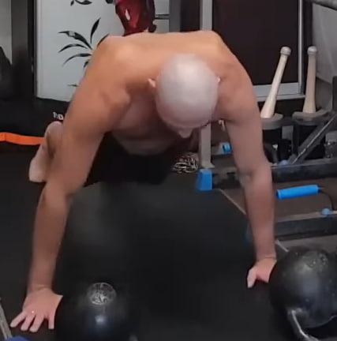
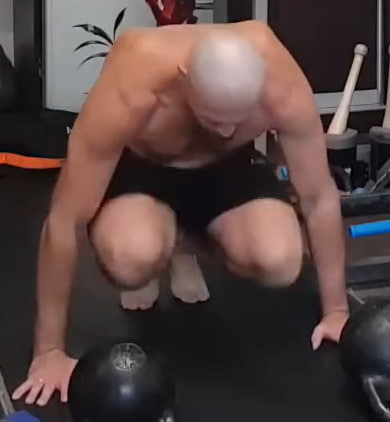
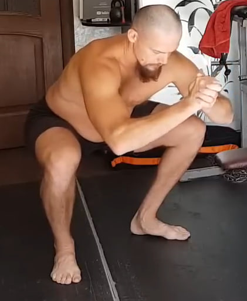
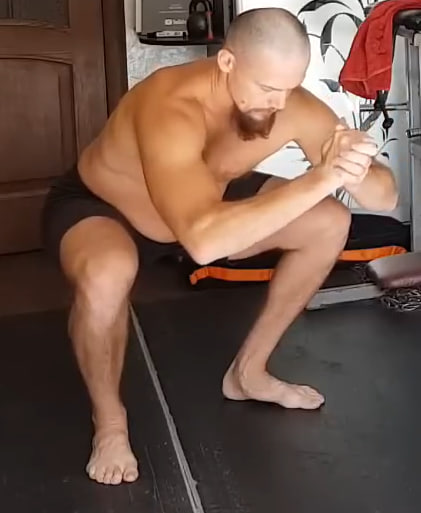
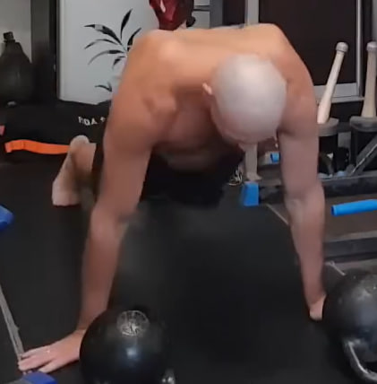

1. Extensión isométrica de pierna hacia atrás para glúteo

Ponte de pie con la espalda completamente recta y las manos apoyadas en la zona lumbar o en las caderas. Desde esta posición lleva una pierna recta hacia atrás sin inclinar el torso hacia adelante. La tensión principal debe concentrarse en el glúteo de la pierna que trabaja, no en la zona lumbar.
Mantén la pierna elevada y el glúteo apretado durante 10 segundos en cada repetición. Cambia de pierna y repite el mismo patrón. Realiza 10 repeticiones por cada lado.
2. Zancadas con pausa isométrica

Da un paso amplio hacia adelante y baja a una zancada profunda, llevando la rodilla trasera casi hasta el suelo. El torso permanece vertical y la rodilla delantera mira estrictamente hacia adelante, sin colapsar hacia dentro.
En la posición baja congela el movimiento y mantén una tensión fuerte durante 10 segundos. Después sube con control, cambia de pierna y repite. Realiza 10 repeticiones por cada lado, manteniendo 10 segundos en cada repetición.
3. Elevación isométrica de pierna recta hacia adelante
Ponte de pie con el torso recto y el abdomen firme. Levanta una pierna completamente recta hacia adelante intentando llevarla hasta 90 grados con respecto al torso o hasta donde tu movilidad lo permita. Evita inclinarte hacia atrás o hacia adelante.
En la posición más alta mantén la pierna en el aire durante 10 segundos antes de bajarla con control. Cambia de lado y repite. Realiza 10 repeticiones por cada pierna, manteniendo 10 segundos en cada repetición.
4. Isometría de elevación de rodilla hacia el pecho
Ponte de pie con el torso recto. Levanta una rodilla hacia el pecho y sujétala con ambas manos creando un bloqueo firme. Desde esta posición intenta elevar la pierna aún más, mientras las manos impiden el movimiento. La tensión debe sentirse en el glúteo y en la parte posterior del muslo.
Mantén la contracción durante 10 segundos en cada repetición y luego cambia de pierna. Realiza 10 repeticiones por cada lado, manteniendo 10 segundos en cada una.
5. Subidas al banco

Colócate frente a un banco o taburete estable. Apoya un pie en la superficie elevada y, empujando con esa pierna, sube el cuerpo como si subieras un escalón, elevando la rodilla de la pierna libre hacia arriba. Mantén el torso recto y el abdomen firme.
Baja con control hasta la posición inicial y cambia de pierna en cada repetición o después de completar la serie. Realiza 10 repeticiones por pierna.
6. Sentadilla estilo “pistola” sobre el banco

Apoya un pie sobre el banco y mantén la otra pierna libre, sin tocar el suelo. Desde esta posición desciende doblando la rodilla de la pierna de apoyo y llevando la cadera hacia atrás y abajo, como en una sentadilla tipo “pistola”. El torso permanece recto y la rodilla se mantiene alineada hacia adelante.
Desciende hasta el punto en el que puedas mantener el control y luego sube de nuevo sin perder el equilibrio. Realiza 10 repeticiones por cada pierna.
7. Sentadillas profundas con hundimiento adicional
 


Coloca los pies un poco más anchos que los hombros, con las puntas ligeramente hacia afuera. Desde la posición de pie baja a una sentadilla profunda hasta tu nivel de trabajo y mantén la postura durante 10 segundos, con el pecho abierto y la espalda recta.
Sin levantarte de la sentadilla, hunde la cadera un poco más abajo durante unos segundos, solo lo suficiente para aumentar la carga, y luego vuelve de nuevo al mismo nivel de trabajo. En esta posición vuelve a mantener 10 segundos antes de subir por completo. Este ciclo cuenta como 1 repetición.
Realiza 10 repeticiones en total.
8. Saltos en estrella

Desde la posición de pie salta abriendo brazos y piernas hacia fuera, formando una “estrella” en el aire, y vuelve a la posición inicial con control. Mantén el torso firme y aterriza con las rodillas ligeramente flexionadas para absorber el impacto.
Realiza 10 repeticiones.
9. Burpee sin flexión


Desde la posición de pie inclínate y coloca las manos en el suelo. Lanza las piernas hacia atrás entrando en posición de plancha. Vuelve a recoger las piernas hacia el pecho con un salto corto y, desde ahí, realiza un salto vertical con el cuerpo extendido.
Realiza 10 repeticiones, manteniendo un ritmo constante y aterrizando de forma controlada.
10. Saltos en posición de plancha
 Colócate en posición de plancha con los brazos extendidos y el abdomen firme. Desde ahí salta con ambos pies hacia adelante, acercando las rodillas al pecho, y luego salta de nuevo hacia atrás para volver a la plancha. Mantén la cadera estable y evita que la zona lumbar se hunda.
Realiza 10 repeticiones con un ritmo elástico y continuo.
11. Sentadillas profundas adicionales con hundimiento


Repite el mismo patrón de sentadilla profunda con hundimiento adicional: mantén la posición de trabajo durante 10 segundos, baja un poco más durante unos segundos y vuelve al nivel de trabajo para sostener otros 10 segundos antes de subir.
Esta serie es más corta que la principal. Realiza 3–5 repeticiones, según tu nivel de fatiga.
12. Saltos en estrella suaves

Realiza unos pocos saltos en estrella para movilizar las piernas y mantener el ritmo de trabajo antes de continuar. No es una serie principal, sino un breve bloque de activación.
Haz 5–10 saltos de forma ligera.
13. Sentadillas profundas de refuerzo

 

De nuevo, realiza sentadillas profundas con el mismo esquema de trabajo: 10 segundos en la posición de sentadilla, hundimiento adicional durante unos segundos y otros 10 segundos en la posición de trabajo antes de subir.
Esta serie también es corta. Completa 3–5 repeticiones manteniendo la técnica limpia.
14. Subidas al banco

Repite el ejercicio de subidas al banco: apoya un pie en la superficie elevada y sube el cuerpo elevando la rodilla de la pierna libre como si subieras un escalón. Mantén el torso estable y el apoyo firme.
Realiza de nuevo 10 repeticiones por pierna.
15. Burpee sin flexión


Realiza una serie corta de burpees sin flexión: desde la posición de pie baja a apoyar las manos en el suelo, lanza las piernas hacia atrás a la plancha, recoge las piernas y ejecuta un pequeño salto vertical.
Esta vez haz solo 5 repeticiones, como bloque breve antes del trabajo final de sentadillas.
16. Sentadillas profundas finales


Termina el día con una última serie de sentadillas profundas usando el mismo esquema: 10 segundos en la posición de trabajo, hundimiento un poco más abajo durante unos segundos y otros 10 segundos en la sentadilla de trabajo antes de subir completamente.
Realiza 3–5 repeticiones, buscando un trabajo intenso pero controlado para cerrar la sesión de piernas.